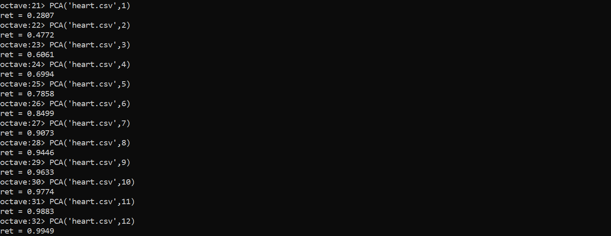

Addressing the problem of dimensionality reduction
Principal component analysis is a statistical method for identifying similarities between variables in a dataset, and then replacing the many specific variables with fewer new, unnamed variables to represent the data instead. This can be useful for simplifying the model and reducing processing time. It can also be useful for data visualization and identifying trends in the data.
This tool is only useful if it is used in such a way that too much meaning from the data isn't lost. One can imagine if the data were to be compressed down too much, one could come up with a very simple model, but it would no longer provide meaningful information about the original dataset. Or, it might provide some insights, but lose other valuable information. Thus, the goal is to find the sweet spot for reducing the number of features while retaining the data's essence. To achieve this, we can use Retention of Variability as a quantitative metric. It is commonly accepted that if one retains 95-99% of the variability of the data, one can feel confident that the dimensionality reduction hasn't lost too much information. For my project, I followed the convention of first reducing my data down to one feature. This means that I am compressing all of the different information down into one variable- likely this will result in a great loss of information and predictive ability. I will then calculate the Retention of Variability. If this is lower than my goal Retention, for example, 99%, I will then increase to two features. This process continues until I reach my goal Retention.
Using PCA on heart attack data
I practiced using this method on a data set about heart attacks uploaded to Kaggle by user @nareshbhat. This data set contains 14 features including age, gender, cholesteral levels, and chest pain type, as well as a binary predictor for heart attack risk. I applied PCA in GNU Octave to see how much I could reduce the dimensionality while retaining 95% and then 99% of the variability of the data.
First I preprocessed the data by applying feature scaling and mean normalization. Mean normalization should always be done before applying PCA, and feature scaling is usually a good idea. Then, I used the built-in sigular value decomposition function to find my U, S, and V matrices, and then I calculated the variability retained if I chose to reduce to one feature. The resultant variability retained was about 28%. I increased the number of fetures I reduced to until I got a variability retained value of 95% and then up to 99%.
For this process I used the following code:
%Read and load the data
data = csvread(file_name);
[a ,b] = size(data);
%split into X and y
X = data(:,1:(b-1));
y = data(:,b);
%initialize helpful values
[m, n] = size(X);
%apply feature scaling
for i = 1:n
X(:,i) = X(:,i)./(max(X(:,i)));
endfor
%apply mean normalization
for i = 1:n
X(:,i) = X(:,i)-mean(X(:,i));
endfor
%compute covariance matrix called Sigma
Sigma = (1/m)*(X'*X);
%compute eigenvectors of the matrix using built-in singular value decomposition function
[U, S, V] = svd(Sigma);
%define new matrix U_red which is the first k columns of U
U_red = U(:,1:k);
%testing variance retention
%start at k = 1 and increase until ret reaches .99
ret = sum(sum(S(:,1:k)))/sum(sum(S))
%compute new compressed data matrix Z
Z = X * U_red;
This code allows me to run principlan component analysis while manually inputting the number of features I would like to reduce to. The following image shows me running this from 1 feature up to 11 features.
These results show that we can reduce down from the original 13 input features to 9 input features while retaining 95% of the variability. We can reduce down to 11 while retaining a whole 99%. In short, after this analysis, we are now armed to make an educated decision between greater reduction of features versus retaintion of variabilty of the data. Whether we decide to reduce just to 11, or down to 9 would depend on our goals and next steps with this project.